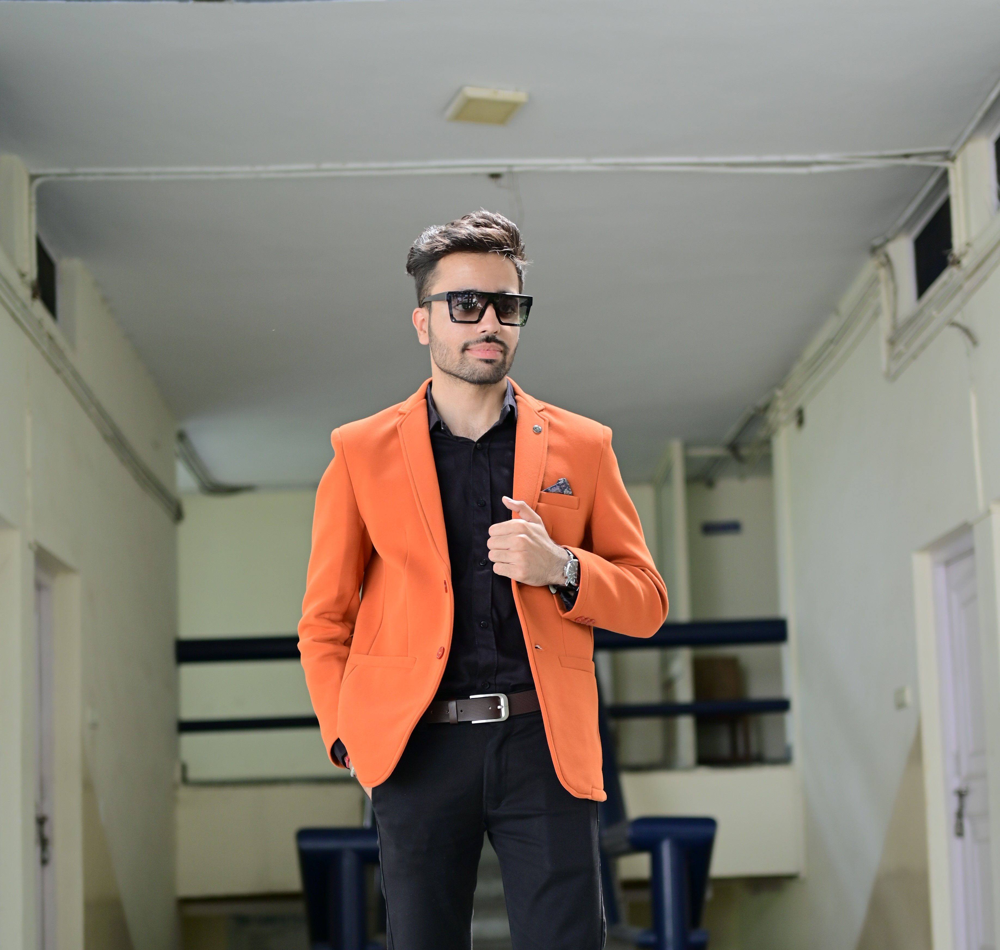

Amar Arora
Summary:
Dedicated student with a passion for software development and a strong foundation in programming languages and algorithms. Eager to apply academic knowledge to real-world projects and contribute to innovative solutions in the tech industry.
Education:
- Master of Computer Applications (MCA)-Chitkara University(2023-2025)
- Bachelor of Computer Applications-Kurukshetra University(2020-2023)
Skills:
- Proficient in languages such as Java, C++, Python
- Knowledge of HTML, CSS, JavaScript, and web development frameworks.
- Understanding of software development methodologies and tools
- Strong grasp of fundamental data structures and algorithms.
Awards, certifications, or other achievements:
- Second Position in Nukkad Natak Activity on Swach Bharat Abhiyan
- First Position in Management Game- Frost Bite
- First Position in Management Game- All Aboard
- Second Position in Comparative & Superlative Speaking Activity.
Hobbies
Contact Details